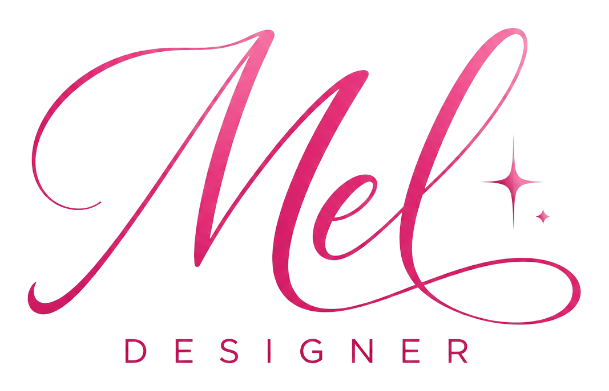
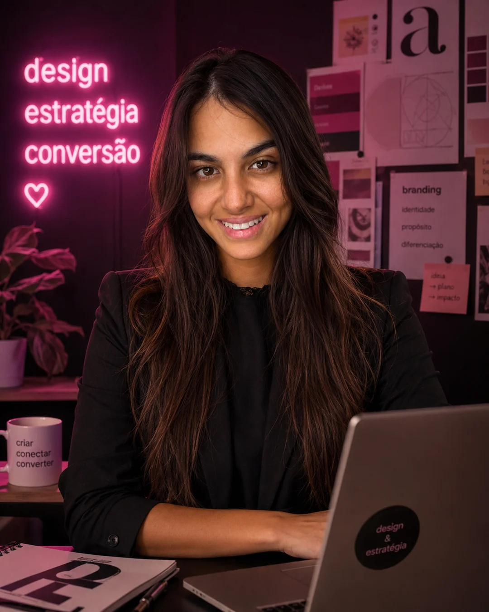
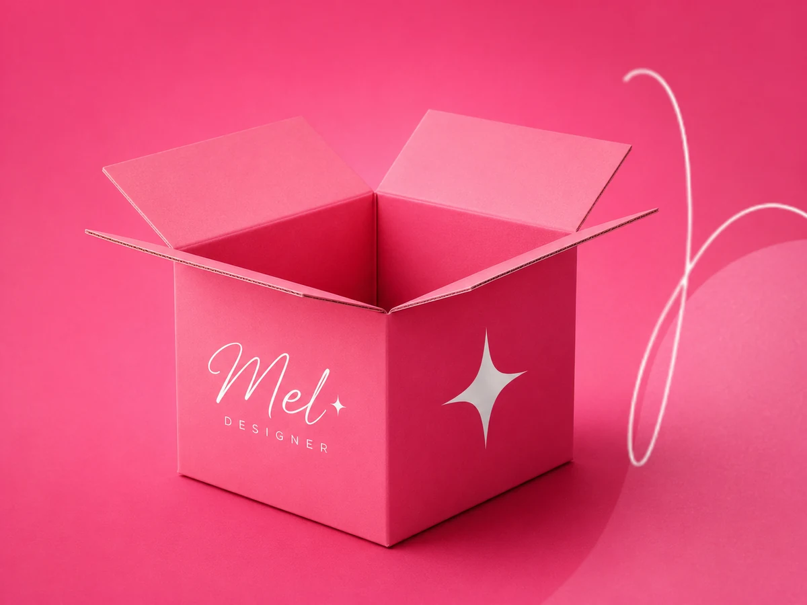
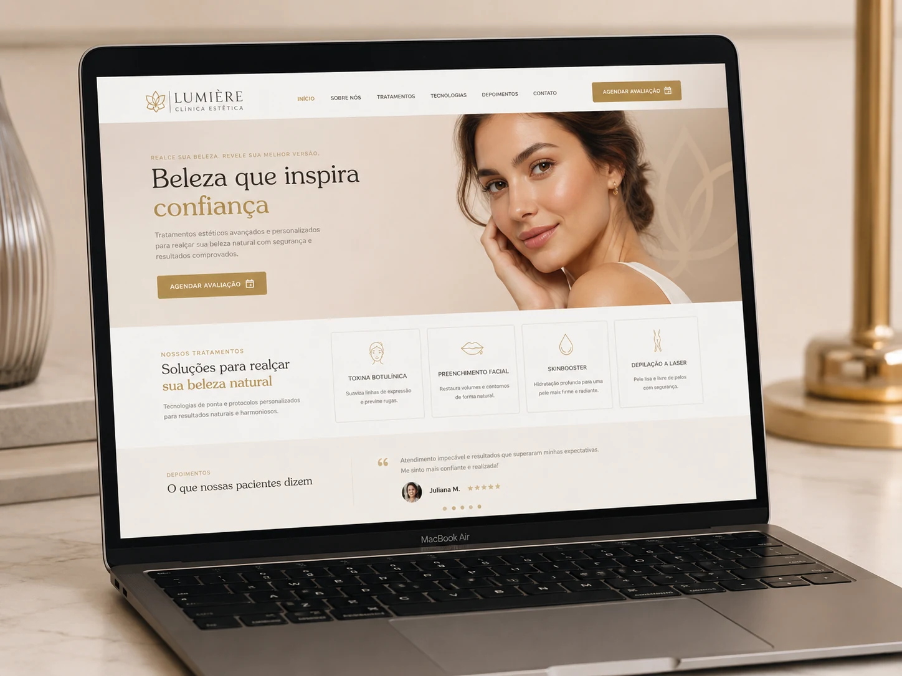
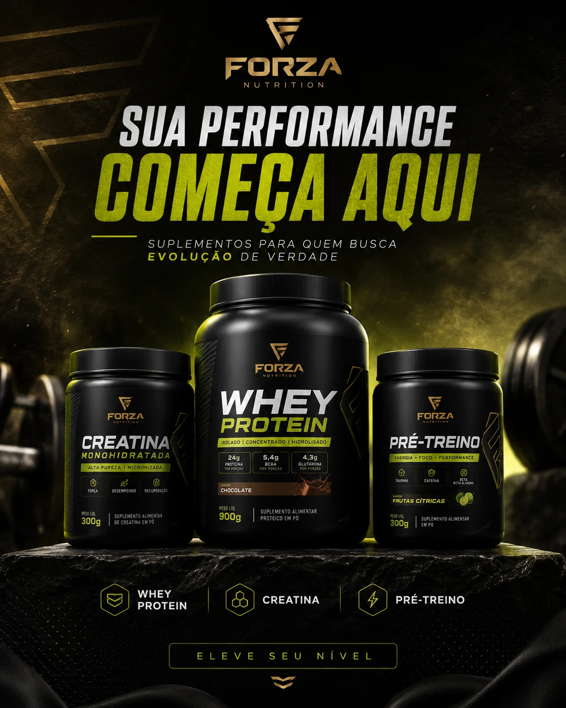

Landing Pages
Páginas estratégicas para gerar autoridade e conversão.

Olhar criativo. Estratégia que vende.
Design gráfico, direção criativa e estratégias visuais para marcas que querem vender mais.
Formada em Design Gráfico, sou apaixonada por criar soluções visuais modernas, estratégicas e otimizadas para gerar conexão, autoridade e conversão.

v>Sobre a Mel
Sou formada em Design Gráfico e atuo com criatividade, intenção e estratégia. Acredito que o design vai muito além da estética: ele comunica, posiciona e impulsiona negócios.
O que eu faço
Páginas estratégicas para gerar autoridade e conversão.
Banners criativos e impactantes para diversos formatos.
Conteúdo visual que engaja, conecta e fortalece sua marca.
Sites modernos, responsivos e com foco na experiência do usuário.
Direção de arte para campanhas de anúncios que vendem.
Otimização completa do seu perfil para aparecer e atrair mais clientes.
Criativos estratégicos para campanhas que geram resultados.
Melhorias que aumentam a performance e a taxa de conversão.
Visão Criativa
Acredito que design não é só beleza: é posicionamento, clareza e conversão. Cada projeto nasce com estratégia, identidade e intenção para gerar impacto real.
⤴
Trabalhos

Clínica Estética
Fitness Store
Odontologia

Suplementos
Academia
Como eu trabalho
Entendo seu negócio, seu público e seus objetivos a fundo.
Planejo a melhor abordagem visual para gerar impacto.
Transformo ideias em designs criativos, claros e alinhados à marca.
Analiso, testo e ajusto para maximizar resultados e conversões.